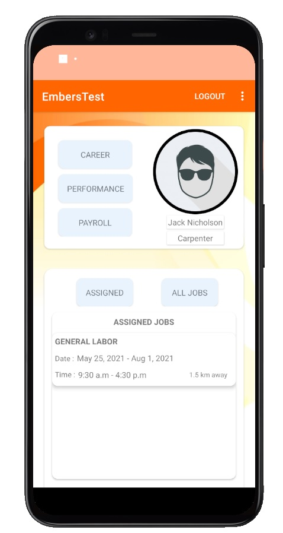
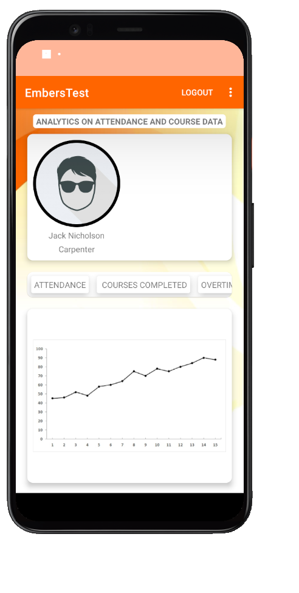
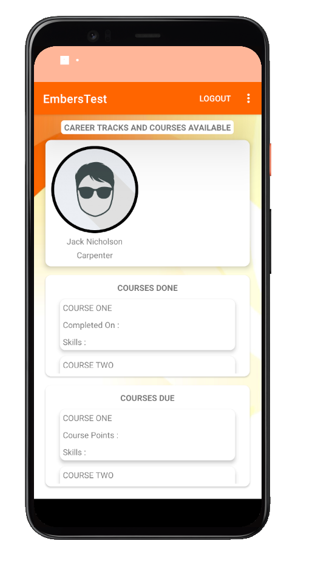

1. Lists the assigned jobs, and available jobs
2. UI neatly arranged in CardViews
3. Profile Picture and User Details retrieved from Server
2. UI neatly arranged in CardViews
3. Profile Picture and User Details retrieved from Server

1. Displays graph of attendance data, courses completed
and other employee metrics
2. Calculates rating for each employee, adding a quality aspect to work.
2. Calculates rating for each employee, adding a quality aspect to work.

1. Displays courses available for different career tracks, e.g Forklift,
Safety Training, TCP, etc.
2. May also be used to conduct IQ and personality quizzes to understand the workforce in another context
2. May also be used to conduct IQ and personality quizzes to understand the workforce in another context